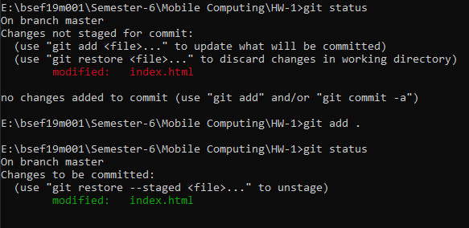
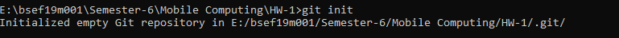
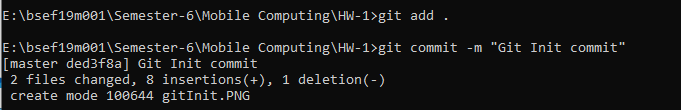
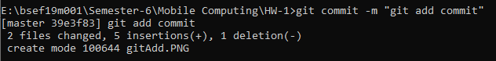
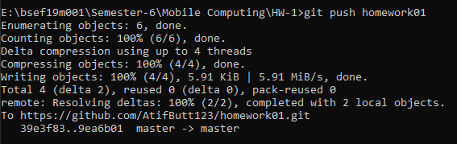

The git status command is used to display the state of the repository and staging area. It allows us to see the tracked, untracked files and changes.
The git init command is used to generate a new, empty Git repository or to reinitialize an existing one. With the help of this command, a .git subdirectory is created, which includes the metadata, like subdirectories for objects and template files, needed for generating a new Git repository.
It adds files to the staging area. We can add single or multiple files at once in the staging area.
git add . adds all files to the staging area
Git Commit It is used to record the changes in the repository. It is the next command after the git add. Every commit contains the index data and the commit message.
The git push command is used to upload local repository content to a remote repository. Pushing is how you transfer commits from your local repository to a remote repo.
